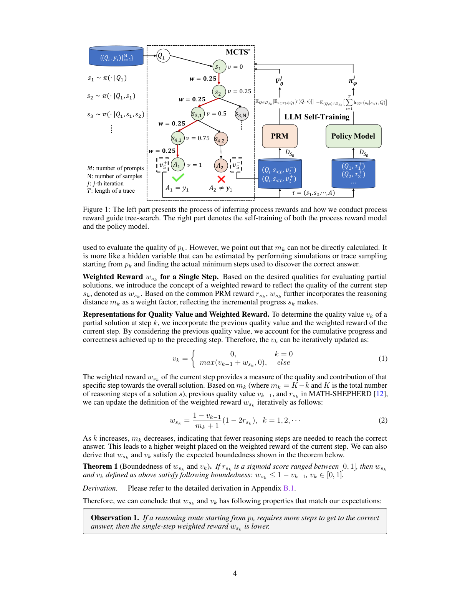
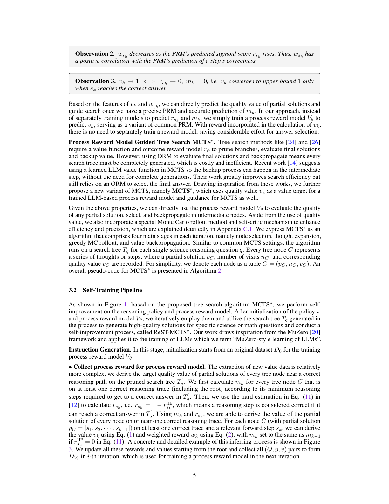
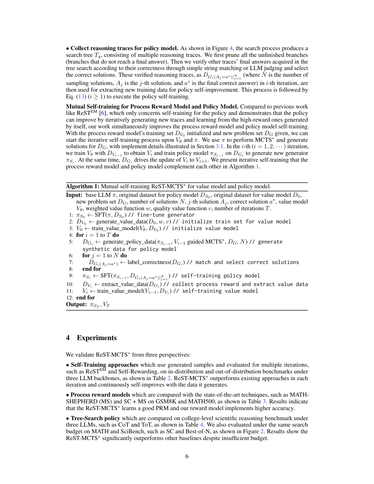
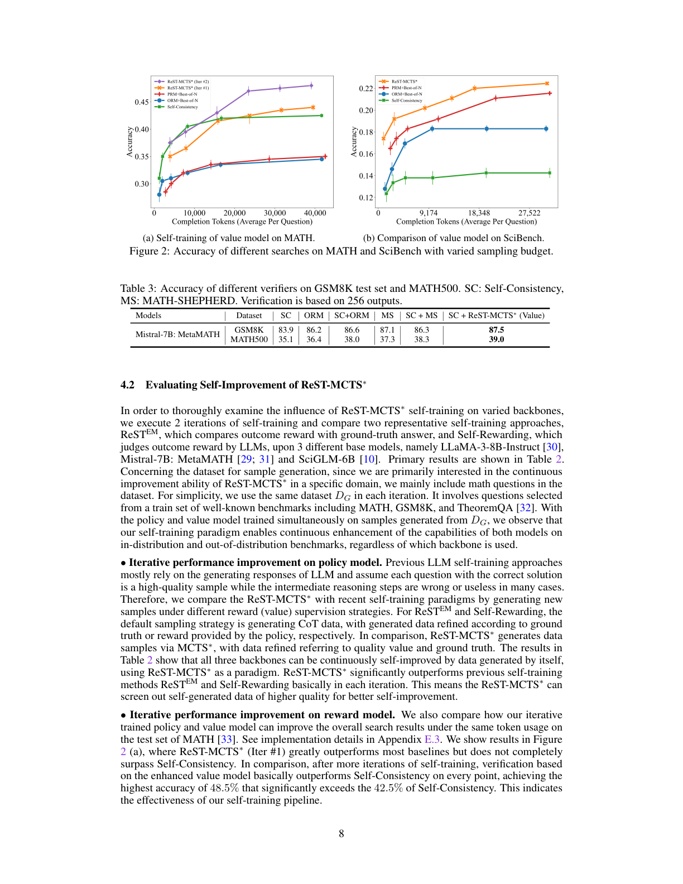

用过程奖励引导的树搜索自动获取高质量推理轨迹，自训练策略模型与过程奖励模型
现有的大语言模型（LLM）自训练方法大多依赖 LLM 生成回复，并过滤出最终答案正确的样本作为训练数据。这种方法往往产生低质量的微调训练集（例如错误的计划或中间推理步骤）。本文提出一种强化式自训练方法 ReST-MCTS∗，它将过程奖励（process reward）引导与树搜索 MCTS∗ 相结合，从而收集更高质量的推理轨迹，以及每一步的价值，用于训练策略模型与奖励模型。
ReST-MCTS∗ 通过基于树搜索的强化学习，规避了训练过程奖励通常所需的逐步骤人工标注：给定标准答案（oracle 最终正确答案），ReST-MCTS∗ 能够推断正确的过程奖励——通过估计「该步骤有助于导向正确答案」的概率。这些推断出的奖励具有双重用途：它们既作为进一步精炼过程奖励模型的价值目标，又用于筛选高质量轨迹供策略模型自训练。
我们首先展示，在相同的搜索预算下，ReST-MCTS∗ 中的树搜索策略比 Best-of-N、Tree-of-Thought 等先前 LLM 推理基线达到更高的准确率。接着我们展示，用该树搜索策略搜索得到的轨迹作为训练数据，我们可以对三个语言模型进行多轮持续增强，并超越 ReSTEM、Self-Rewarding LM 等其他自训练算法。我们已在 https://github.com/THUDM/ReST-MCTS 开源全部代码。
大语言模型主要在人类生成的数据上训练。但随着网络上大多数高质量人类文本已被爬取并用于 LLM 训练，研究重点已转向利用 LLM 生成的内容进行自训练。与大多数强化学习（RL）问题类似，LLM 自训练需要一个奖励信号。多数现有的强化式自我改进方法（如 STaR、RFT、ReSTEM、V-STaR）假设可以访问一个真实奖励模型（来自监督数据集的标签，或预训练的奖励模型）。这些方法用 LLM 为每个问题生成多个样本，并假设能带来高奖励（正确解）的那个就是高质量样本，随后在这些样本上训练（即自训练）。这类流程能有效提升 LLM 性能，在某些情况下可解决基础 LLM 原本无法解决的推理任务。
然而，上述流程的一个关键局限是：即便一条推理轨迹最终得到正确解，也并不必然意味着整条轨迹都准确。LLM 经常生成错误或无效的中间推理步骤，却仍凭运气找到正确答案。因此，自训练数据集常包含许多「假阳性」——中间推理轨迹或计划是错误的，但最终输出却正确——这限制了 LLM 在复杂推理任务上微调的最终性能。解决该问题的一种方式是使用价值函数或奖励模型来验证推理轨迹的正确性（从而作为自训练的学习信号）。然而，训练一个可靠的奖励模型来验证推理轨迹中的每一步，通常依赖密集的人类逐步骤标注，难以扩展。我们的研究旨在弥补这一空白：开发一种新方法，在自动获取可靠推理轨迹的同时，有效利用奖励信号进行验证。
本文提出 ReST-MCTS∗，一种用基于模型的强化学习训练 LLM 的框架。我们的方法使用一个改进的蒙特卡洛树搜索（MCTS）算法作为推理策略（记为 MCTS∗），由训练好的逐步骤过程奖励（价值）模型引导。方法的关键是：通过执行足够次数的 rollout，自动为训练逐步骤奖励模型生成逐步骤标签。该标注过程有效筛选出质量最高的样本子集，无需额外人工干预。表 1 总结了我们的方法与此前方法的区别。实验验证 ReST-MCTS∗ 在 SciBench 与 MATH 基准上，于相同搜索预算下，比 Self-Consistency（SC）和 Best-of-N（BoN）等更善于发现好的推理轨迹，进而带来更好的自训练。
我们的贡献总结如下：
我们遵循基于 LLM 推理的标准设定。从一个由基础 LLM 实例化的策略 $\pi$ 出发。给定输入问题 $Q$，最简单情况下，$\pi$ 通过自回归预测下一个 token，生成由推理步骤 $(s_1, s_2, \cdots, s_K) \sim \pi(\cdot|Q)$ 组成的输出序列或轨迹。为简洁，我们假设一个推理步骤由一句话（本身含多个 token）构成，并假设最后一个输出 $s_K$ 为最终步骤。LLM 也可以通过提示或条件约束，使生成偏向某些轨迹。对于提示 $c$，可写作 $\pi(\cdot|Q, c)$。这一思想在思维链（CoT）中最著名。
自一致性（Self-Consistency, SC）。 自一致性从 $\pi$ 中采样多条推理轨迹，选择出现最频繁的最终答案。
树搜索与价值函数。 另一思想是采用树状结构的推理轨迹，从中间推理步骤分叉。使用所谓树搜索推理算法的一个关键问题，是需要一个价值函数来引导原本组合爆炸式的搜索过程。两类常见价值函数为：仅依据最终答案正确性训练的结果奖励模型（ORM），以及依据每个推理步骤正确性训练的过程奖励模型（PRM）。我们假设 $r_{s_k}$ 为 PRM 在第 $k$ 步输出的 sigmoid 分数。我们的 ReST-MCTS∗ 方法用树搜索自动学习一个好的 PRM。
Best-of-N。 作为自一致性的替代，也可用学习的价值函数（PRM 或 ORM）选择价值最高的推理轨迹。
自训练。 总体上自训练分两步：第一步是生成，用 $\pi$（此处为树状轨迹）采样多条推理轨迹；第二步是改进，在推理轨迹上构造学习信号，再用它微调 $\pi$。该过程可迭代多轮。
先前工作的局限。 可靠自训练的主要挑战在于构造有用的学习信号。理想情况下，我们希望对每一步中间推理的正确性都有稠密学习信号，这正是 PRM 所提供的。否则，在稀疏学习信号下，会遭遇类似强化学习中的信用分配（credit assignment）问题。历史上，学习 PRM 的主要挑战是缺乏逐步骤的监督标注——这正是 ReST-MCTS∗ 力求克服的核心难题。
我们的方法 ReST-MCTS∗ 如图 1 所示，由四个主要组件构成：(1) MCTS∗，在 PRM 引导下以充足 rollout 时间执行树搜索；(2) 过程奖励模型（PRM），评估任意部分解的质量并引导 MCTS∗；(3) 策略模型，为每个问题生成多个中间推理步骤；(4) LLM 自训练，用 MCTS∗ 收集推理轨迹，在正向样本上训练策略模型，在所有生成轨迹上训练过程奖励模型。

部分解的价值 $v_k$。 部分解 $p_k = [s_1, s_2, \cdots, s_k]$ 的价值（过程）奖励 $v_k$ 应满足以下基本性质：有界范围（取值受限）；反映正确性的概率（$v_k$ 越高表示越接近正确解）；同时反映步骤的正确性与贡献（正确的下一步带来更高 $v_k$，向最终答案作出更多正确推导的步骤带来更高 $v_k$）。
部分解的推理距离 $m_k$。 为估计一个解步骤的进展，我们定义 $p_k$ 的推理距离 $m_k$ 为：从 $p_k$ 出发，策略模型到达正确答案所需的最少推理步数。$m_k$ 反映了进展程度，也反映了策略基于当前步骤找出正确答案的难度，故可进一步用于评估质量。
我们引入加权奖励（weighted reward） $w_{s_k}$ 来反映当前步骤 $s_k$ 的质量，它在常用 PRM 奖励 $r_{s_k}$ 的基础上，进一步把推理距离 $m_k$ 作为权重因子，反映 $s_k$ 作出的增量进展。
为确定第 $k$ 步部分解的质量值 $v_k$，我们综合前一质量值与本步加权奖励。质量值 $v_k$ 可迭代更新为：
当前步骤的加权奖励 $w_{s_k}$ 刻画了该步骤对整体解的质量与贡献。基于 $m_k$（其中 $m_k = K-k$，$K$ 为一解的总推理步数）、前一质量值 $v_{k-1}$ 以及 MATH-SHEPHERD 中的 $r_{s_k}$，加权奖励迭代定义为：
随 $k$ 增大，$m_k$ 减小，意味着到达正确解所需推理步数更少，从而使当前步骤的加权奖励权重更高。
定理 1（${w_{s_k}}$ 与 ${v_k}$ 的有界性）。 若 $r_{s_k}$ 为取值于 $[0,1]$ 的 sigmoid 分数，则上述定义的 $w_{s_k}$ 与 $v_k$ 满足有界性：$w_{s_k} \le 1 - v_{k-1}$，且 $v_k \in [0,1]$。推导详见附录 B.1。
由此可得与预期相符的若干性质：
基于 $v_k$ 与 $w_{s_k}$ 的特性，一旦拥有精确的 PRM 和对 $m_k$ 的准确预测，我们就能直接预测部分解的质量值并引导搜索。我们的做法并非分别训练模型预测 $r_{s_k}$ 与 $m_k$，而是直接训练一个过程奖励模型 $V_\theta$ 来预测 $v_k$（作为常见 PRM 的变体）。由于奖励已纳入 $v_k$ 的计算，无需再单独训练奖励模型，省去大量答案选择的开销。
过程奖励模型引导的树搜索 MCTS∗。 树搜索方法需要价值函数与结果奖励模型 $r_\phi$ 来剪枝、评估最终解并回溯价值。但用 ORM 评估最终解并回溯意味着每条搜索轨迹都必须完整生成，代价高昂且低效。近期工作建议在 MCTS 中使用学习的 LLM 价值函数，使回溯可在中间步骤进行，无需完整生成。我们进一步提出 MCTS 的新变体 MCTS∗，它将质量值 $v_k$ 作为训练的 LLM 过程奖励模型的价值目标，并作为 MCTS 的引导信号。除质量值外，我们还引入特殊的蒙特卡洛 rollout 方法与自我批评机制来提升效率与精度（详见附录 C.1）。MCTS∗ 在每次迭代包含四个主要阶段：节点选择、思维扩展、贪心 MC rollout、价值回溯。算法在每道科学推理问题 $q$ 的搜索树 $T_q$ 上运行，每个树节点 $C$ 记录部分解 $p_C$、访问次数 $n_C$ 与相应质量值 $v_C$，记为元组 $C = (p_C, n_C, v_C)$。

如图 1 所示，基于提出的树搜索算法 MCTS∗，我们对推理策略与过程奖励模型进行自我改进。初始化策略 $\pi$ 与过程奖励模型 $V_\theta$ 后，迭代地运用它们，并利用过程中生成的搜索树 $T_q$ 为特定的科学或数学问题生成高质量解，执行称为 ReST-MCTS∗ 的自改进过程。我们的工作受 MuZero 框架启发，并将其应用于 LLM 训练，我们称之为「LLM 的 MuZero 式学习」。
指令生成（Instruction Generation）。 初始化从一个原始数据集 $D_0$ 开始训练过程奖励模型 $V_\theta$。

过程奖励模型与策略模型的互自训练（Mutual Self-training）。 与仅关注策略自训练的 ReSTEM 不同，我们的工作同时改进过程奖励模型与策略模型的自训练。给定价值模型训练集 $DV_0$ 初始化与新的问题集 $DG$，我们可对 $V_\theta$ 与 $\pi$ 启动迭代自训练：用 $\pi$ 执行 MCTS∗ 为 $DG$ 生成解，第 $i$ 轮用 $DV_{i-1}$ 训练 $V_\theta$ 得到 $V_i$，用 $DGi$ 训练策略模型 $\pi S_{i-1}$ 得到新生成器 $\pi S_i$，同时 $DGi$ 驱动 $V_i$ 更新为 $V_{i+1}$。算法 1 给出了二者互补的迭代自训练。
我们从三个角度验证 ReST-MCTS∗：(1) 自训练方法——在三个 LLM 主干上，于分布内与分布外基准上多轮评估（见表 2）；(2) 过程奖励模型——与 MATH-SHEPHERD (MS) 及 SC+MS 在 GSM8K、MATH500 上比较（见表 3）；(3) 树搜索策略——在大学级科学推理基准上与 CoT、ToT 等比较（见表 4），并在 MATH、SciBench 上于相同搜索预算下与 SC、Best-of-N 比较（见图 2）。
为获得准确的环境反馈，我们通过过程奖励（价值）推断，从一组精选的科学/数学问题 $D_0$ 构建价值模型的初始训练集 $DV_0$，无需人工标注。随后我们在该数据集上分别微调 ChatGLM3-6B 与 Mistral-7B，得到作为 PRM 变体的初始价值模型，引导 LLM 在科学/数学问题上进行更高质量的树搜索。
科学与数学的细粒度数据集。 为收集科学价值训练数据，我们将 SciInstruct 中精简科学数据集 $D_{sci}$ 的问题并入 $D_0$。该数据集含 11,554 道题，每题配有一条正确的逐步解答。对每道题 $q^{(i)}$ 及其解 $s^{(i)}$，我们抽取所有部分解构成样本；为使价值模型能区分错误步骤，我们再用基本不擅长此类推理的 ChatGLM2 生成单步错误步骤，构造新的部分解并视为不正确。总计收集 473.4k 样本训练初始价值模型，并据此构造 $DV_0$。数学价值训练数据采用另一种方法（见附录 B.1）。
为充分考察 ReST-MCTS∗ 自训练对不同主干的影响，我们执行 2 轮自训练，在三个基础模型（LLaMA-3-8B-Instruct、Mistral-7B:MetaMATH、SciGLM-6B）上与 ReSTEM、Self-Rewarding 比较。由于主要关注特定领域内的持续改进能力，我们主要在数据集中包含数学问题，并在每轮使用相同数据集 $DG$（选自 MATH、GSM8K、TheoremQA 的训练集）。策略与价值模型同时在 $DG$ 生成样本上训练，结果表明无论使用哪种主干，自训练范式都能在分布内与分布外基准上持续提升两个模型的能力。
策略模型的迭代性能提升。 先前自训练方法多依赖 LLM 生成回复，并假定「带正确答案的问题」即为高质量样本，而中间推理步骤在许多情况下错误或无用。ReST-MCTS∗ 通过 MCTS∗ 生成数据，依据质量值与真实答案筛选，在表 2 中三个主干上均能通过自生成数据持续自我改进，且基本在每轮显著超越 ReSTEM 与 Self-Rewarding，说明它能筛出更高质量的自生成数据。
奖励模型的迭代性能提升。 在 MATH 测试集上，相同 token 用量下比较迭代训练的策略与价值模型对整体搜索结果的提升（见图 2(a)）。ReST-MCTS∗（第 1 轮）大幅超越多数基线但未完全超越 Self-Consistency；经过更多轮自训练后，基于增强价值模型的验证基本在每一点都超越 Self-Consistency，最高准确率达 48.5%，显著高于 Self-Consistency 的 42.5%，表明自训练流程的有效性。

本文核心假设是：更好的搜索策略获得更高质量轨迹，能改进自训练。我们先在表 3 单独评估价值模型本身的有效性，再在表 4 评估不同推理策略的性能。
各类验证模型的性能比较。 我们在 GSM8K 与 MATH500 上用多个奖励模型与验证方法测试，并纳入 MATH-SHEPHERD (MS) 作对比（因其同样采用自动训练数据生成方法）。对 SC+ReST-MCTS∗，我们采用与 MS 相同的基于 CoT 的采样策略，仅以自身价值模型输出替代 MS 的奖励模型，构成对奖励模型训练方法的直接比较。结果显示 SC+ReST-MCTS∗ (Value) 在 GSM8K 与 MATH 上的解准确率提升更高，证实我们的价值模型有效，也说明质量值与加权奖励的定义有效或可能更优。
相同搜索预算下的性能比较。 尽管基于 MCTS 的搜索方法显著提升模型性能，却常需要可观的 token 输入与生成量。我们在 SciBench 科学问题上研究搜索 token 预算与模型性能的关系（图 2(b)）。结果显示 ReST-MCTS∗ 即便在预算不足时也大幅超越其他基线；基于 CoT 的方法虽可通过增大采样预算大幅提升，但很快收敛到有限的准确率，不如 ReST-MCTS∗。
不同推理策略在基准上的比较。 我们在 SciBench 上以 GLM4、GPT-3.5-turbo（API）与小规模 LLaMA2-13B-Chat 为骨干进行实验（表 4，每法重复 2 次取 10 个科目的平均准确率）。整体准确率上 ReST-MCTS∗ 在全部 3 个模型上超越其他基线，GLM4 提升超 4.0%、GPT-3.5-turbo 超 3.1%；在 chemmc、quan、stat 等具体科目上提升超 5.0%。我们的 ToT 基线在许多科目也表现良好，有时甚至超过 ReST-MCTS∗，反映价值模型能为基于树搜索的方法提供恰当引导。我们也发现 LLaMA2-13B-Chat 上提升不显著，揭示小规模策略在采用复杂树搜索时可能因逐步推理能力较低而受限。
大语言模型（LLMs）已成为自然语言任务上的显著成功。近期研究聚焦于提升 LLM 推理能力，包括收集高质量/更大规模领域数据、设计精巧的提示、或训练监督学习与强化学习（RL）。当 LLM 用 RL 算法训练时，其生成可自然表达为马尔可夫决策过程（MDP）并针对特定目标优化。据此，InstructGPT 用基于人类反馈的 RLHF 优化 LLM 以对齐人类偏好取得巨大成功；RLAIF 则使用 AI 反馈扩展 RLHF。我们的工作旨在提出一种通过过程奖励引导树搜索的 LLM 自训练方法。
LLM 推理算法包括基于提示的思维链（CoT），以及以思维树（ToT）为代表的基于规划的方法。科学推理有多种挖掘现有大模型潜力的类别。已有研究试图超越直接生成：例如逐步生成解、用另一模型/函数选出排名靠前的答案、通过限制输出范围避免幻觉；maieutic prompting 可生成递归解释并消除矛盾候选以实现逻辑一致推理。CoT 模仿人类逐步求解；自一致性 CoT 通过采样多种解释并选最频繁最终答案提升可靠性；ToT 进一步泛化 CoT，在树中考虑多条不同推理路径。本文在 [22; 24; 34; 35] 等困难科学推理任务上作基准比较。
本文提出 ReST-MCTS∗，通过奖励引导树搜索生成的高质量样本，对策略模型与过程奖励模型进行自训练。前一迭代推断出的奖励能够精炼过程奖励模型，并用高质量轨迹自训练策略模型。实验表明 ReST-MCTS∗ 超越其他自训练范式，并在相同搜索预算下比先前推理基线达到更高准确率。
局限性： 我们在附录 H 详述了局限性。概言之，我们需要证明 ReST-MCTS∗ 能推广到数学之外的其他推理任务（如编程、智能体等），以及无标准答案的任务（对话、SWE-Bench 等）；我们还需要扩大所提出的价值模型并进一步改进数据过滤技术。一个潜在思路是引入在线 RL 算法，以更好地对价值模型与策略模型进行自训练。